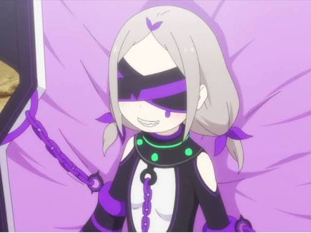

Sua personalidade é dominada por uma fome insaciável, tornando-a apática à dor alheia. Ela criou bestas demoníacas para saciar seu apetite, mas não se importa se os humanos são devorados, justificando que "quem tenta comer também deve temer ser comido".
Criou as Bestas Demoníacas (como a Baleia Branca) para acabar com a fome mundial. A personagem é retratada como uma jovem com tranças e um caixão, e seus olhos são cobertos por uma venda. Suas bizarrices incluem uma fome insaciável que a leva a comer os próprios pais e o hábito de vomitar e comer seu próprio vômito.
possui a Autoridade da Gula, que lhe permite criar Bestas Demoníacas como a Baleia Branca e o Coelho Volumoso. Seu objetivo era saciar sua fome insaciável, o que a torna capaz de manipular a saciedade, a vida e a morte de suas monstruosas criações
Daphne nasceu como uma criança com uma fome insaciável, levando-a a comer seus próprios pais devido ao desespero. Devido ao seu pecado, seu corpo esquelético e amaldiçoado foi selado e mantido vivo pelo resto de sua vida através do uso de um caixão de ferro flutuante.